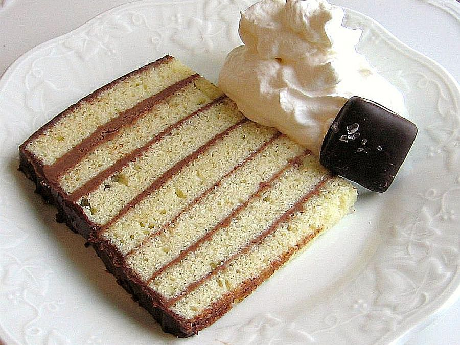

Seven Sisters Cake (Siasto Stefanka)

Americans of Eastern European descent have come to call the Polish ciasto stefanka
and Hungarian stefánia torta by the name seven sisters cake, referring to its seven
layers (six layers in most Hungarian versions). It can be made as a loaf cake or a
round cake and resembles Hungarian dobos torta without the caramel topping. This cake
is in no way related to Danish seven sisters cake, which is an almond-butter ring
coffee cake.
Instead, Eastern European seven sisters cake has many iterations, but the one
Americans are most familiar with is a torte made with layers of vanilla sponge cake,
cocoa buttercream filling, and cocoa glaze. At first blush, the cake appears to be
difficult to make but, if you follow the easy steps in this recipe, it's a snap.
Ingredients
For the Sponge Cake
- 1/2 pound (1 cup) unsalted butter, softened
- 1 cup granulated sugar
- 4 large eggs, lightly beaten
- 1 1/2 cups all-purpose flour
- 1 pinch salt
- 1 teaspoon pure vanilla extract
For the Cocoa Buttercream Filling
- 1/2 pound (1 cup) unsalted butter, softened
- 2 1/2 cups confectioners' sugar, sifted
- 1 large pasteurized egg, or 1/3 cup heavy whipping cream
- 1/3 cup cocoa powder, sifted
For the Cocoa Glaze
- 2 ounces (4 tablespoons) unsalted butter, melted
- 4 tablespoons cocoa powder, sifted
- 4 tablespoons hot water
- 2 cups confectioners' sugar
- 1 teaspoon pure vanilla extract
Steps
Make the Sponge Cake
- Gather the ingredients.
- Heat the oven to 350 F. In a large bowl, cream 1/2 pound butter and
1 cup sugar until light and fluffy. Beat in 4 eggs, then flour, salt,
and 1 teaspoon vanilla until smooth. Lightly coat the bottom of seven
(8-by-4-inch) disposable aluminum loaf pans with cooking spray.
- Weigh the batter (remembering to subtract for the weight of the bowl).
Divide that number by 7 and that's how many ounces you will need for
each pan in order to create even layers.
- Bake for 7 minutes or until the edges are very lightly brown. Don't
overbake. Remove from oven and let cool 5 minutes. Run a knife around
the edges of the pans and invert onto a cake rack to cool completely.
Make the Cocoa Buttercream Filling
- Gather the ingredients.
- In a medium bowl, beat the 1/2 pound butter until light and fluffy.
Add the 2 1/2 cups confectioners' sugar, mixing until well incorporated,
and then beat for 3 minutes.
- Add 1 pasteurized egg or whipping cream and beat for 2 more minutes.
Stir in the 1/3 cup cocoa powder and then beat until well combined.
Make the Glaze
- Gather the ingredients.
- In a medium bowl, combine the 4 tablespoons melted butter, 4 tablespoons
cocoa powder and hot water.
- Blend in 2 cups confectioners' sugar and 1 teaspoon vanilla until smooth.
Assemble the Cake
- Place one cooled cake layer on a serving plate and spread with 1/7 of the
cocoa buttercream filling. Continue in this manner until all 7 sponge layers
have been stacked. Leave the top and sides of the cake bare.
- Pour the cocoa glaze over the top of the cake and, using a cake spatula,
spread the overflow around the sides of the cake to cover it completely.
The chocolate glaze will harden, which is what you want. Chill until set.
- Serve thin slices of this rich cake and enjoy.